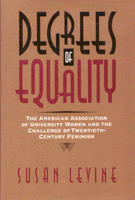

<body bgcolor="#FFFFFF" text="#000000" link="#0000FF" vlink="#CC0000" alink="#CC0000"><center><hr width="350" size="1" align="center" noshade>The history of one of the nation's most influential voices for equality<hr width="350" size="1" align="center" noshade><p><a href="https://cdcshoppingcart.uchicago.edu/Cart/ChicagoBook.aspx?ISBN=9781566393263&&PRESS=temple" target="_top">Buy this book!</a> | <a href="https://cdcshoppingcart.uchicago.edu/Cart/Cart.aspx?PRESS=temple" target="_top">View Cart</a> | <a href="https://cdcshoppingcart.uchicago.edu/Cart/Cart.aspx?PRESS=temple" target="_top">Check Out</a></p><p></p></center><!--none//--><h1>Degrees of Equality</h1>
<H2>The American Association of University Women and the Challenge of Twentieth-Century Feminism</H2>
<h3>Susan Levine, afterword by Alice Ann Leidel</h3>
<P>cloth 1-56639-326-4 $64.50, May 95, <FONT COLOR=#990033>Available</FONT>
<BR> 240 pp
6x9
3&nbsp;tables 20&nbsp;halftones
</P><BLOCKQUOTE><I>"This important book is a vital contribution to the growing body of scholarship which is changing our understanding of twentieth-century feminism. From its formation in 1881 as the Association of Collegiate Alumnae to this moment the AAUW has been major force in the American women's movement. As the world has changed, so has it. Susan Levine's book is must reading for scholars in women's history and in organizational theory."</I>
<br>&#151<b>Anne Firor Scott</b>, W.K. Boyd Professor of History Emeirta, Duke University<I></I></BLOCKQUOTE>
<p>The American Association of University Women (AAUW) is one of the nation's oldest and most influential voices for equality in education, the professions, and public life. Tracing the history of the AAUW, Susan Levine provides a new perspective on the meaning of feminism for women in mainstream liberal organizations. In so doing, she explores the problems that women confront and the strategies they have developed to achieve equal rights.
<p>Established in 1921 with the merging of two regional groups of women college graduates, the AAUW has grown to become a vital resource center for educational policy and women's concerns. While not always favoring the label "feminist," AAUW has sought to end discrimination against women, providing fellowships for women to pursue higher education, lobbying for changes in public policy, and conducting groundbreaking research. From the beginning, however, both achievement and controversy have marked the organizations' efforts. The AAUW, self-identified as the voice of moderation and mainstream women, has also been bound by social convention of class and race. One result, a bitter conflict in the late 1940s over racial integration, forced AAUW to change its national policies. Yet the organization emerged stronger than ever and at present boasts over 135,000 members.
<p>By examining the experience of groups like AAUW, Levine suggests that feminism was not so much "reborn" in the 1970s as it was adopted by a rapidly growing constituency of college educated women demanding the realization of their goals.
<BR>&nbsp;<h2>Contents</h2><P>
<p>Illustrations
<br>Acknowledgments
<br>Introduction
<p><b>Part I: Equality with a Difference: Experts in a Limited Sphere, 1929-1945</b>
<br>1. Education as a Badge of Service
<br>2. Testing the Boundaries of Liberal Feminism
<br>3. Women as World Citizens
<p><b>Part II: Women's Culture and the Crisis of American Liberalism, 1945-1960</b>
<br>4. Retreat from Conflict
<br>5. Higher Education and the New Domesticity
<br>6. Sociability and Racial Justice
<p><b>Part III: Mainstream Feminism and the New Activism, 1960-1979</b>
<br>7. The Expansion of Education and the Feminist Constituency
<br>8. Leaders of the Moderate Mainstream
<p>Afterword &#150 Alice Ann Leidel and Jackie DeFazio
<br>Notes
<br>Appendix A: AAUW Presidents
<br>Appendix B: Tables
<br>Index
</P><BR>&nbsp;<H2>About the Author(s)</H2>
<P><b>Susan Levine</b> is Assistant Professor of History at East Carolina University and the author of <I>Labor's True Woman: Carpet Weavers, Industrialization, and Labor Reform in the Gilded Age</I> (Temple).</P>
<BR><H2>Subject Categories</H2>
<p><A HREF="/tempress/women.html" TARGET="_top">Women's Studies</a>
</p>
<BR><h2 class="inpageheading">In the series</H2>
<P><I><a href="http://www.temple.edu/tempress/critical.html" onMouseOver="window.status='Click for other books in this series!'; return true;" onMouseOut="window.status=''; return true;" target="_top">Critical Perspectives on the Past</a></i>, edited by <a href="http://www.temple.edu/tempress/authors/benson_memoriam.html" target="_top">Susan Porter Benson</a>, Stephen Brier, and Roy Rosenzweig.
</p><p><i>Critical Perspectives on the Past</i>, edited by Susan Porter Benson, Stephen Brier, and Roy Rosenzweig, is concerned with the traditional and nontraditional ways in which historical ideas are formed. In its attentiveness to issues of race, class, and gender and to the role of human agency in shaping events, the series is as critical of traditional historical method as content. Emphasizing that history is itself an interpretation of material events, the series demonstrates that the historian's choices of subject, narrative technique, and documentation are politically as well as intellectually constructed.</p>
<p align="center"><a href="https://cdcshoppingcart.uchicago.edu/Cart/ChicagoBook.aspx?ISBN=9781566393263&&PRESS=temple" target="_top">Buy this book!</a> | <a href="https://cdcshoppingcart.uchicago.edu/Cart/Cart.aspx?PRESS=temple" target="_top">View Cart</a> | <a href="https://cdcshoppingcart.uchicago.edu/Cart/Cart.aspx?PRESS=temple" target="_top">Check Out</a></p><p><font face="Arial" size="1"><a href="copyright.html" onMouseOver="window.status='Web Copyright Policy';return true;" onMouseOut="window.status=''" title="Web Copyright Policy">&copy;</a> 2015 <a href="http://www.temple.edu" target="new" onMouseOver="window.status='Link to Temple University home page';return true;" onMouseOut="window.status=''" title="Link to Temple University home page">Temple University</a>. All Rights Reserved. http://www.temple.edu/tempress/titles/1248_reg.html</font></p>